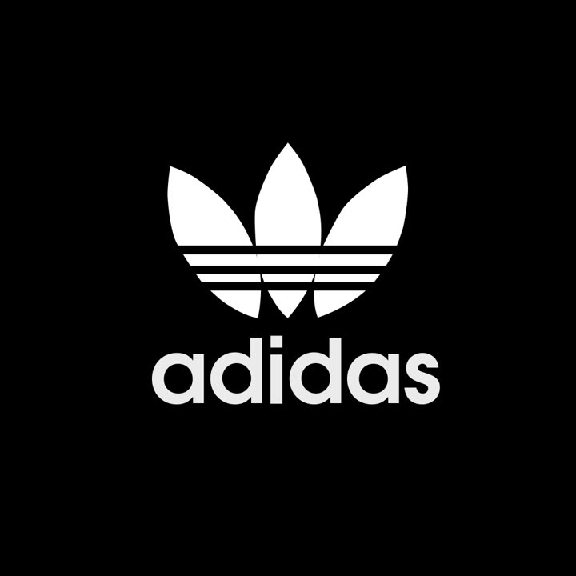
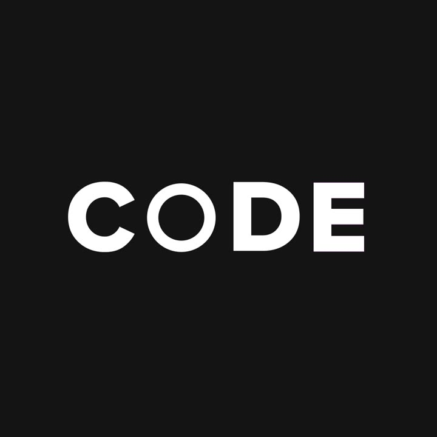
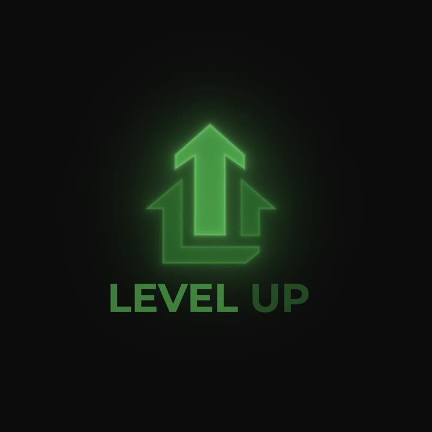
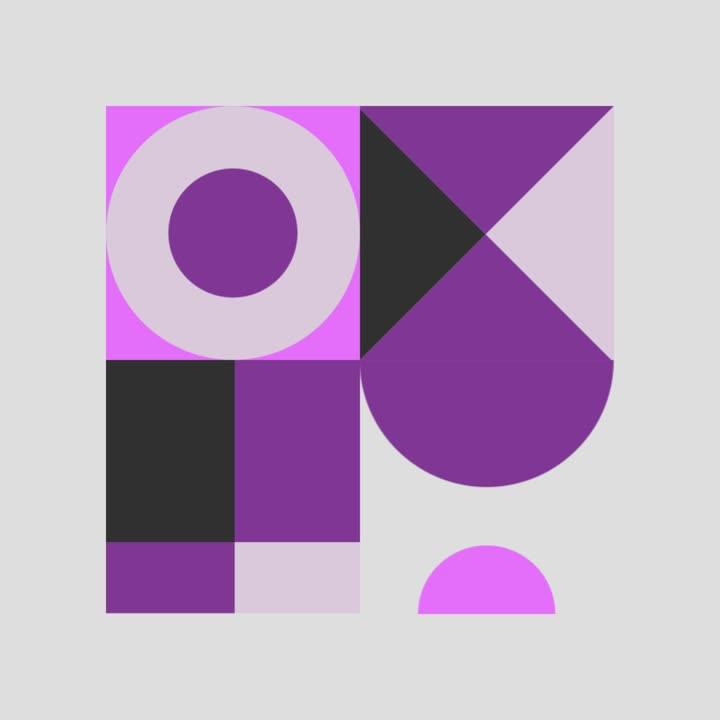
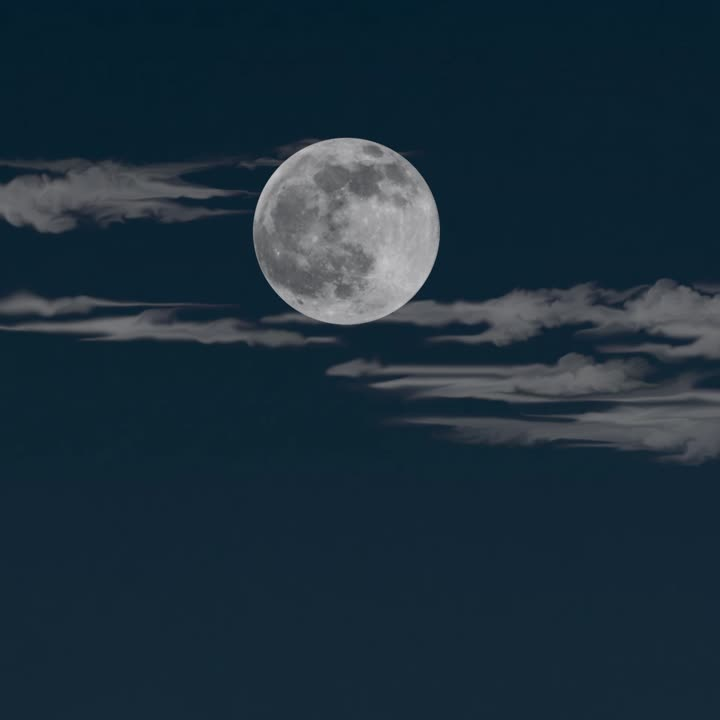
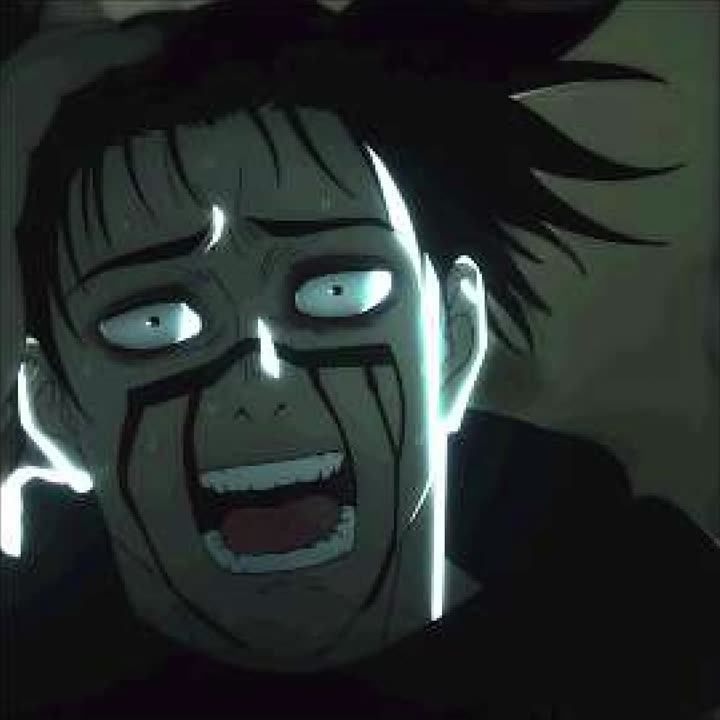
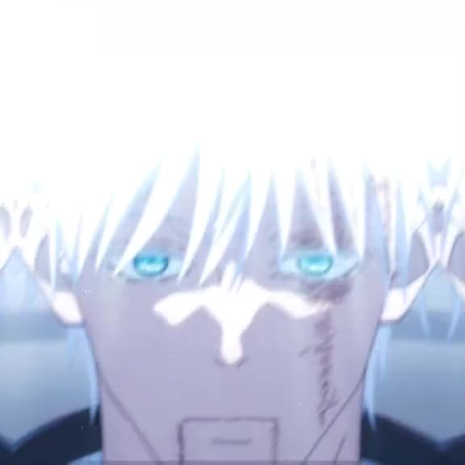

Video Editor / Motion Design
Монтаж видео, который цепляет
Создаю динамичные эдиты, атмосферные видеоролики и анимации, превращая идеи в визуальные истории.
Немного обо мне
Я начинающий видеомонтажёр: делаю эдиты, визуальные эффекты и анимации в Adobe Premiere Pro и After Effects. Люблю экспериментировать с динамикой, цветом, переходами и звуком, чтобы видео получались выразительными и запоминающимися. Постоянно развиваю навыки и пробую новые приёмы.
Смотреть полное портфолио-
Premiere Pro
Монтаж, цвет и работа со звуком.
-
After Effects
Анимация, эффекты и композитинг.
- Видеоэдитинг
- Motion Design
- Визуальные эффекты
Что я умею
-
Видеомонтаж
Сборка материала, работа с ритмом, динамикой и переходами.
-
Цветокоррекция
Настройка цвета, контраста и атмосферы кадра.
-
Работа со звуком
Синхронизация музыки, звуковые акценты и базовая обработка аудио.
-
Титры и текстовая анимация
Стильное оформление надписей и появление текста.
-
Short-формат
Короткие динамичные видео для социальных сетей.
-
Эдиты и клипы
Музыкальные эдиты, нарезки и атмосферные видеоролики.
-
Рекламные видео
Монтаж коротких промороликов.
-
Анимация и визуальные эффекты
Создание движения, эффектов и композиций в After Effects.
Избранные работы
Все работы в Telegram-

0:03Motion Design
Adidas logo
Анимация появления логотипа: линии, форма и подпись.
-

0:08Motion Design
Code
Текстовая анимация: символы собираются в слово CODE.
-

0:05Visual Effects
Level Up
Неоновые стрелки и свечение, анимация повышения уровня со звуком.
-

0:06Motion Design
Геометрия
Зацикленная анимация из простых геометрических фигур.
-

0:10Motion Design
Солнце и луна
Смена солнца и луны на небе, плывущие облака.
-
0:08
Motion Design
Компьютер
Иллюстрация с анимированными элементами: шестерёнки, окна, интерфейс.
-

0:21Music Edit
Choso — Come Home
Эдит под музыку: переходы, эффекты и работа с цветом.
-
0:27
Music Edit
Satoangel
Эдит под музыку: ритм, переходы и визуальные эффекты.
-

0:30Music Edit
TDD Satosug
Эдит под музыку: монтаж по ритму, эффекты и цвет.
Видео сжаты для сайта. Полные версии и другие работы — в Telegram-портфолио.
Почему стоит посмотреть мои работы
Каждый кадр имеет значение.
-
Внимание к деталям
Аккуратная работа с переходами, ритмом и синхронизацией.
-
Индивидуальный подход
Стремлюсь подобрать стиль под конкретную идею.
-
Постоянное развитие
Изучаю новые техники монтажа и анимации.
-
Работа с атмосферой
Внимание к музыке, цвету и эмоциональному восприятию видео.
Есть идея? Давай обсудим
Расскажи о своей задумке — вместе подумаем, как превратить её в интересное видео.
Открыт к новым идеям и интересным проектам. Напиши мне в Telegram или VK — обсудим детали.
- Telegram @Jevj1k
- VK vk.com/jevj1k
- Портфолио t.me/jevj1k_pf